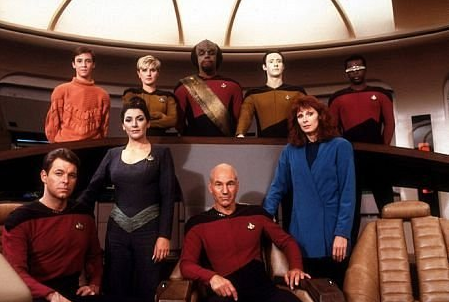
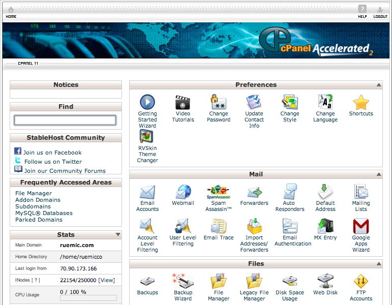
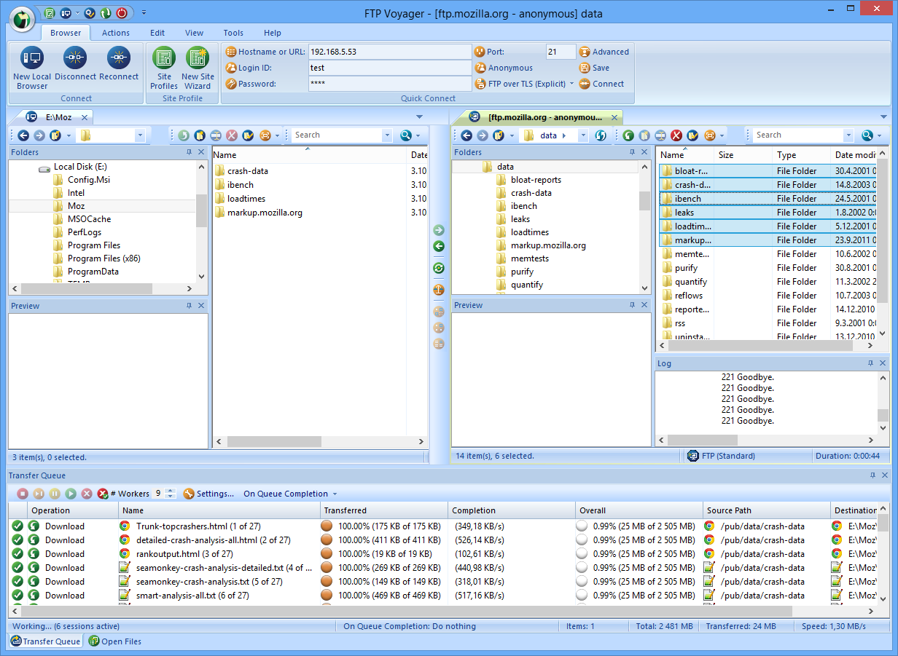
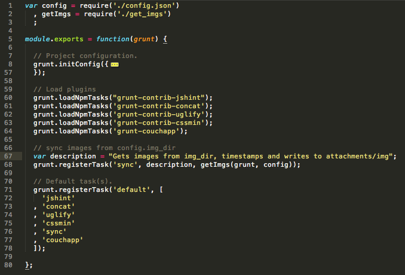

Your browser doesn't support the features required by impress.js, so you are presented with a simplified version of this presentation.
For the best experience please use the latest Chrome, Safari or Firefox browser.
Having your own website is pretty sweet.

But getting one online is a pain in the ass!


Doing it properly is downright hard.

So most sites just end up being slow :(
 loading...
loading...
There must be a better way.